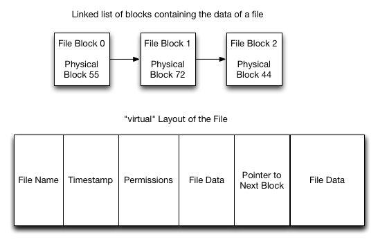
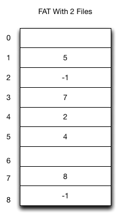
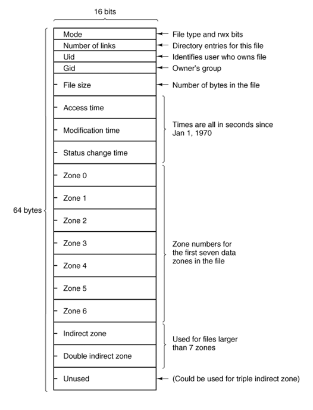
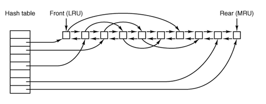
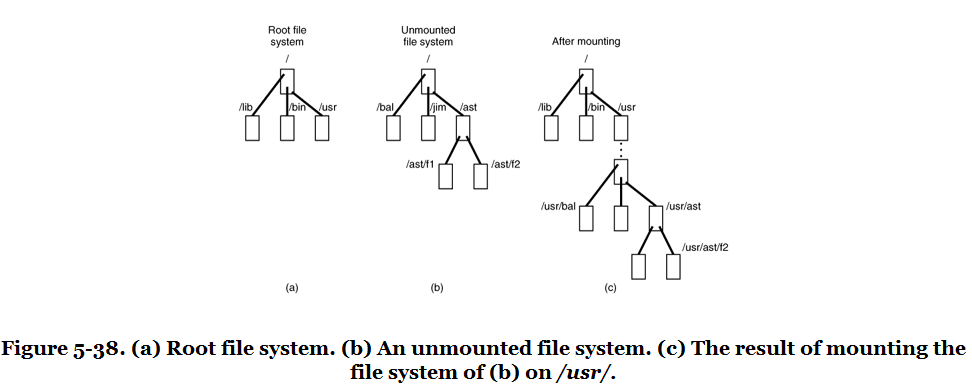

Implementing Files and Folders#
Filesystems organize storage into named files, directories, metadata, and free space. Their design depends on the storage medium and on the operations the operating system needs to support.
Filesystem Layout#
Simple media can store files contiguously with a table of contents.
Tape, optical media, and write-once media often favor contiguous layouts because files are not frequently modified in place. Hard disks, SSDs, flash media, and other reusable storage need more flexible structures because files are created, extended, truncated, and deleted over time.
Linked-List Allocation#
Linked-list allocation stores each file as a chain of blocks.

This layout avoids external fragmentation because blocks can be anywhere
on the device. It is simple and works well for sequential access. Its
main weakness is random access: finding block K requires following
the chain through earlier blocks.
Linked-List Tradeoffs#
Linked-list allocation is easy to implement but has practical costs.
The final block can have internal fragmentation if it is not full. Each block also needs space for a pointer to the next block, leaving slightly less space for file data. Random access is slow because the filesystem must traverse the chain.
File Allocation Tables#
A file allocation table, or FAT, stores the block chain in a central table instead of inside each data block.

At mount time, the FAT can be loaded into memory. This makes traversal faster and lets each data block hold only file data.
FAT Tradeoffs#
FAT filesystems are simple and practical for small or moderate storage devices.
They make free-space management and disk layout straightforward. The main cost is that the table can become large on large filesystems and consume significant memory.
inodes#
An inode is the central metadata structure in a UNIX filesystem.
An inode stores ownership, mode bits, timestamps, file size, device information, and pointers to blocks containing the file or directory contents. Directory entries map names to inode numbers.
Minix inode#
The Minix inode layout uses direct and indirect zones.

The first zones point directly to data blocks. An indirect zone points to a block containing more block numbers. A double-indirect zone points to blocks that point to other blocks. This lets small files be accessed quickly while still supporting larger files.
inode Strategy#
Direct, indirect, double-indirect, and triple-indirect blocks are a successful filesystem design pattern.
Small files use direct pointers and avoid extra lookups. Larger files add levels of indirection only when needed. Linux filesystems such as ext2, ext3, and ext4 build on this general idea, though modern ext4 also uses extents.
Block Caches#
A block cache keeps recently used disk blocks in memory.
The cache supports read-ahead and write-behind. A write() call can
update the cache and return before the block is physically written to
disk. A background kernel task can later choose a good time and order to
write dirty blocks.
Minix Block Cache#
Minix uses an LRU-style block cache.

The cache tracks buffers from most recently used to least recently used. This keeps frequently used filesystem metadata and data blocks available without repeated disk reads.
Block Cache Tradeoffs#
A larger block cache usually improves filesystem performance but uses memory that programs could otherwise use.
Write-behind delay creates another tradeoff. A longer delay lets the kernel batch writes and schedule them efficiently, but it increases the amount of data that could be lost after a crash. A shorter delay improves durability but can reduce I/O scheduling opportunities.
Folders and Path Traversal#
A directory maps names to filesystem objects.
In UNIX filesystems, directories are represented by inodes whose contents are directory entries. Each entry maps a filename to another inode. Resolving a path means starting at a root directory and repeatedly looking up the next path component.
Path Traversal#
Path traversal can cross mount points and therefore filesystem implementations.

The virtual filesystem layer is responsible for making this traversal look like one namespace even when different parts of the path live on different filesystems.
Virtual Filesystems#
A virtual filesystem, or VFS, defines a common interface between the kernel and filesystem implementations.
The VFS lets the kernel handle common behavior such as path traversal, file descriptors, file locking, block cache integration, named pipes, domain sockets, and device files without duplicating that logic in every filesystem.
VFS Adaptation#
The VFS also lets operating systems support foreign or specialized filesystems.
A filesystem such as VFAT can be adapted to the kernel’s common file interface even if its native metadata model differs from UNIX. The VFS contract lets different filesystems participate in the same namespace.
Filesystem Stacking#
Some VFS designs allow one filesystem to be stacked on another.
UMSDOS adapted VFAT into a more UNIX-like filesystem by adding hidden metadata files. Union filesystems overlay two filesystems so their contents appear as one tree. Stacking is useful when the desired behavior can be expressed as a layer above an existing filesystem.
User-Mode Filesystems#
User-mode filesystems move filesystem implementation out of the kernel and into ordinary processes.
FUSE is the common UNIX-like example. Dokan provides a similar idea on Windows. These frameworks make filesystem development easier because a crash usually kills a process rather than the whole kernel, and ordinary debugging tools can be used.
User-Mode Filesystem Tradeoffs#
User-mode filesystems improve development ergonomics but add crossings between kernel mode and user mode.
For many specialized filesystems, the development and safety advantages are worth the overhead. This pattern is part of a broader move to keep more system services in user mode when kernel-mode performance is not required.
Pass-Through FUSE Filesystem#
A pass-through FUSE filesystem forwards operations to an underlying directory.
void ExampleFS::AbsPath(
char dest[PATH_MAX], const char *path) {
strcpy(dest, _root);
strncat(dest, path, PATH_MAX);
}
void ExampleFS::setRootDir(const char *path) {
printf("setting FS root to: %s\n", path);
_root = path;
}
int ExampleFS::Getattr(
const char *path, struct stat *statbuf) {
char fullPath[PATH_MAX];
AbsPath(fullPath, path);
printf("getattr(%s)\n", fullPath);
return RETURN_ERRNO(lstat(fullPath, statbuf));
}
Key points:
AbsPath()converts a FUSE path into a real path under the root directory.setRootDir()records the backing directory.Getattr()forwards metadata lookup tolstat().RETURN_ERRNOadapts system-call errors to FUSE’s return convention.
FUSE Name Operations#
FUSE callbacks often map directly to familiar UNIX file operations.
int ExampleFS::Mkdir(const char *path, mode_t mode) {
printf("**mkdir(path=%s, mode=%d)\n", path, (int)mode);
char fullPath[PATH_MAX];
AbsPath(fullPath, path);
return RETURN_ERRNO(mkdir(fullPath, mode));
}
int ExampleFS::Unlink(const char *path) {
printf("unlink(path=%s\n)", path);
char fullPath[PATH_MAX];
AbsPath(fullPath, path);
return RETURN_ERRNO(unlink(fullPath));
}
int ExampleFS::Rmdir(const char *path) {
printf("rmkdir(path=%s\n)", path);
char fullPath[PATH_MAX];
AbsPath(fullPath, path);
return RETURN_ERRNO(rmdir(fullPath));
}
int ExampleFS::Symlink(const char *path, const char *link) {
printf("symlink(path=%s, link=%s)\n", path, link);
char fullPath[PATH_MAX];
AbsPath(fullPath, path);
return RETURN_ERRNO(symlink(fullPath, link));
}
int ExampleFS::Rename(const char *path, const char *newpath) {
printf("rename(path=%s, newPath=%s)\n", path, newpath);
char fullPath[PATH_MAX];
AbsPath(fullPath, path);
return RETURN_ERRNO(rename(fullPath, newpath));
}
Key points:
Each callback receives a path in the mounted FUSE namespace.
The implementation translates that path to a backing path.
Directory and name operations are delegated to ordinary system calls.
A pass-through filesystem can be small because it reuses existing filesystem behavior.
FUSE File I/O Operations#
File I/O callbacks handle opening, reading, writing, and syncing files.
int ExampleFS::Open(const char *path,
struct fuse_file_info *fileInfo) {
char fullPath[PATH_MAX];
AbsPath(fullPath, path);
fileInfo->fh = open(fullPath, fileInfo->flags);
return 0;
}
int ExampleFS::Read(const char *path, char *buf,
size_t size, off_t offset, struct fuse_file_info *fileInfo) {
return RETURN_ERRNO(pread(fileInfo->fh, buf, size, offset));
}
int ExampleFS::Write(const char *path, const char *buf,
size_t size, off_t offset, struct fuse_file_info *fileInfo) {
return RETURN_ERRNO(pwrite(fileInfo->fh, buf, size, offset));
}
int ExampleFS::Fsync(
const char *path, int datasync, struct fuse_file_info *fi) {
printf("fsync(path=%s, datasync=%d\n", path, datasync);
if(datasync) {
return RETURN_ERRNO(fdatasync(fi->fh));
} else {
return RETURN_ERRNO(fsync(fi->fh));
}
}
Key points:
Open()stores the real file descriptor in the FUSE file handle.Read()usespread()so the offset is explicit.Write()usespwrite()for the same reason.Fsync()forwards durability requests tofdatasync()orfsync().
FUSE Directory Operations#
Directory callbacks open, read, and close directories.
int ExampleFS::Opendir(const char *path,
struct fuse_file_info *fileInfo) {
printf("opendir(path=%s)\n", path);
char fullPath[PATH_MAX];
AbsPath(fullPath, path);
DIR *dir = opendir(fullPath);
fileInfo->fh = (uint64_t)dir;
return NULL == dir ? -errno : 0;
}
int ExampleFS::Readdir(const char *path, void *buf,
fuse_fill_dir_t filler, off_t offset,
struct fuse_file_info *fileInfo) {
printf("readdir(path=%s, offset=%d)\n", path, (int)offset);
DIR *dir = (DIR*)fileInfo->fh;
struct dirent *de = readdir(dir);
if(NULL == de) {
return -errno;
} else {
do {
if(filler(buf, de->d_name, NULL, 0) != 0) {
return -ENOMEM;
}
} while(NULL != (de = readdir(dir)));
}
return 0;
}
int ExampleFS::Releasedir(
const char *path, struct fuse_file_info *fileInfo) {
closedir((DIR*)fileInfo->fh);
return 0;
}
Key points:
Opendir()opens the backing directory and stores the handle.Readdir()reads directory entries from the backing directory.filler()passes each name back to FUSE.Releasedir()closes the stored directory handle.
FUSE#
FUSE mirrors the UNIX filesystem contract closely.
Each callback corresponds to a familiar file or directory operation. Because those operations have well-defined manual pages, a pass-through filesystem can be implemented with relatively little code. Simple FUSE filesystems can be a few hundred to a few thousand lines, while more advanced filesystems are larger but still easier to develop than kernel filesystems.